Choosing and Repeating
Week 1 gave you state — a program that runs top to bottom and does the same thing every time. These two weeks add the other two tools: branching, so a program can choose, and repetition, so it can do something a thousand times without you typing it a thousand times. Then the structures worth repeating over: arrays, lists, dicts, sets and tuples.
The lecture, then the practice
Choose a section from the list to open it — or use the arrow keys once the list has focus. Code blocks are live: edit them, run them, and break them on purpose. Several of them below are meant to fail — read what the compiler says before you fix them.
01Types, booleans and expressions
1.1Java is strongly, statically typed
Variables have types, data has types, and those types must be compatible and known at compile time. Week 1 showed you one kind of type error. There are others, and they all arrive before the program ever runs.
Two errors from one run. That is normal — the compiler reports everything it can find, so always start reading at the first one.
1.2It is not only variables that have a type
- Methods have a return type. That
voidinpublic static void mainmeans “returns nothing”. - Expressions have a type — the type of the value they evaluate to.
The expression
10 + 3has typeint.
So int i = 10 + 3; is fine and boolean b = 10 + 3; is not. Run it
and read the two types the error names.
Because expressions have types, you can use one anywhere a value of that type is
expected. That sounds obvious. It is the reason a whole comparison can be handed straight to
an if, stored in a variable, or returned from a method.
1.3boolean is its own type
Java has a boolean type for every true/false value, and it is
not compatible with the numeric types. Other languages disagree. This is
valid C++:
bool b = true; int i = 10 + b; // i is 11 — fine in C++
The Java equivalent will not compile at all.

C++ lets you write shorter code and lets a typo compile. Java refuses the shortcut and catches the typo. Neither is “right” — but you should know which one you are typing into.
The type is named after a person. George Boole published An Investigation of the Laws of Thought in 1854, arguing that logic could be done as algebra — with values that are only ever true or false. There were no computers to apply it to. Eighty-three years later a 21-year-old master’s student, Claude Shannon, noticed in his 1937 MIT thesis that Boole’s algebra described exactly what a circuit of relay switches does — and the two halves of your boolean finally met. Source: Wikipedia — A Symbolic Analysis of Relay and Switching Circuits.
1.4The operators that produce a boolean
A lone boolean is dull. They become useful as the type of a whole
expression, built with these:
| Operator | Means | Takes |
|---|---|---|
| < <= > >= | less / less-or-equal / greater / greater-or-equal | two numbers |
| == | equal to — note the two equals signs | two of any type, though only some pairings are useful |
| != | not equal to | as above |
| && | and — true only when both sides are true | two booleans |
| || | or — true when either side is true | two booleans |
| ! | not — flips true and false | one boolean |

= assigns. == compares. In Java, writing if (x = 5)
is usually caught, because the assignment’s type is int and an
if needs a boolean — the type system saving you again. In C
the same line compiles and has ruined many afternoons.
These combine, as long as the types line up. Enter 15, then try 7:
02Choosing in Java

The pedant is asking for the else branch. Everyday English
“if X, then Y” quietly implies “otherwise, not Y” — but
if (cond) { … } says nothing at all about the false case. That gap
is this whole section.
if: the points are thrown one way or the other, the train takes exactly one route, and the two routes meet again further down the line.
Photo: Mikael Johansson, 2006 · CC BY-SA 3.02.1The if statement
Now that a program can say whether something is true, it can use that to decide what to do next. The syntax, with the angle brackets standing in for your own code:
if (<condition>) {
<what to do when the condition is true>
}2.2Two ifs are not an if-else
What about when the condition is false? The obvious move is a second if. It
has two problems, and the second one is nastier than it looks.
- What about exactly 100? Neither condition is true, and the program says nothing. Separate conditions need separate care, and this is a good place to introduce a logic bug quietly.
- The first block changed
i. By the time the secondifis tested,iis 101 — so both messages print for a single input. Run it above and watch it happen.
Take care to branch the right way on equality.
Brian W. Kernighan & P. J. Plauger, The Elements of Programming Style, 2nd ed., 1978 Portrait: Ben Lowe, 2012 · CC BY 2.0An else block fixes both, because the two branches become genuinely
exclusive: exactly one of them runs.
The first IF in a high-level language had three exits
and no else at all. FORTRAN for the IBM 704 offered only the
“arithmetic IF”: IF (X) 10, 20, 30 jumps to statement 10 if
X is negative, 20 if it is zero and 30 if it is positive. The true/false
“logical IF” you are learning here only arrived with FORTRAN IV in 1962.
Source:
Wikipedia — Fortran.
if (<condition>) {
<code when the condition is true>
}
else {
<code when the condition is false>
}2.3Many conditions: else if
You can nest an if-else inside an else, and it works. But
when you are choosing on one value and nothing else, it is nicer to lay the cases out at the
same level.
The conditions are tested one after another until one is true, or the final
else is reached. So order matters — and you can use that
deliberately, putting a specific case before an overlapping general one:
Now move the i == 42 branch to the bottom of the ladder and
run it again with 42. It becomes unreachable — and nothing warns you.
03switch and fall-through
3.1When every test is “is it equal to…”
Suppose x being 1, 5, 87 or 120 means one thing and anything else means
another. With an if that is a long boolean condition:
if (x == 1 || x == 5 || x == 87 || x == 120) { ... }
else { ... }Bearable for four cases. Painful for twenty, and worse if each case does something
different. A switch is a compacted else if ladder restricted to
equality — one readable line per case, easy to add to.
byte, short, char, int and
String, plus enums and object types via pattern matching. The remaining
primitives are still a preview feature — and comparing floating-point numbers for
equality is a bad idea anyway. You can switch on a whole expression, not just a
variable.
A char can sit in that list because to the machine it is a small number. In ASCII 'A' is 65 and 'a' is 97. The gap of 32 was deliberate: in 1963 the committee placed the lowercase letters so that each differs from its capital by a single bit, which made case-insensitive matching, keyboards and printers simpler to build. That is why switch, < and + all work on characters. Source: Wikipedia — ASCII (history).
3.2break, and what happens without it
A switch checks the cases in order, and when it finds a match it
starts running there and keeps going — through every case below it —
until it hits a break or the end of the block. Predict the output before you run
this.
Three lines. It starts at the match, not at the top — and then
nothing stops it. A missing break is one of the most common bugs in this whole
subject.
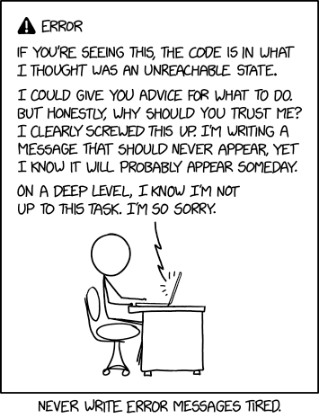
3.3Fall-through on purpose
Used deliberately, it is how you group cases that share an action:
Context decides; neither is always better. If the conditions cannot be reduced to
equality checks, switch is simply not available. If they can, it is worth
considering — a column of one-line cases is easier to extend correctly than a boolean
condition three lines long.
04Choosing in Python
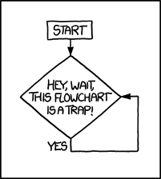
4.1Same idea, less punctuation
Conditionals in Python work essentially as they do in Java, with mildly different syntax:
elif rather than else if, a colon rather than braces, and
indentation doing the work that { } does in Java.
if (1 < 2): works. if 1 < 2: is the preferred Python style.
Keep the parentheses for grouping, not out of habit from Java.
4.2Once you have it in one language
Every imperative language works the same way here — the ideas transfer and only the syntax changes. That is worth noticing now, because it is the reason this subject teaches two languages at once rather than one twice as deeply.
4.3match — Python’s switch, sort of
Before version 3.10 Python had nothing like switch, only a hack with dicts
that returns known values rather than running code. Since 3.10 there is a
structural pattern matching statement:
match <subject>:
case <pattern 1>:
<action 1>
case <pattern 2>:
<action 2>
case _:
<default action>Notice what is missing: there is no break, because there is
no fall-through. Only the matching block runs. That is the major practical
difference from a Java switch — Python’s version comes from functional
pattern matching rather than C’s fancy jump.
Which means the stacked-label trick from section 3.3 is gone. In its place,
| gives one case several values:
Which does start to look like an if/elif again.
The line between them is genuinely fuzzy; match may make later changes tidier, or
may not.
05Loops in Java
A program without a loop and a structured variable isn’t worth writing.
Alan Perlis, Epigrams on Programming, 19825.1Repetition is boooooring
To print 1 to 10 with what you know so far, you write ten println lines. To
print 1 to 1000 you write a thousand — and who is going to check that code?
The real killer is this: what if the number changes every time the program runs? The user picks it. You cannot write out lines for a number you do not know. Until you have a loop, that program is not merely tedious to write — it is impossible.
A cycle of operations, then, must be understood to signify any set of operations which is repeated more than once.
Ada Lovelace, Note E to her translation of Menabrea’s Sketch of the Analytical Engine, 1843 Portrait: Antoine Claudet, 1843 · public domainThat is very likely the first definition of a loop ever written down — and it needs no jargon at all. A loop is a group of steps you do more than once.
Sequence, selection and iteration are not just convenient — they are enough. The Böhm–Jacopini theorem (1966) proves that any computable function can be written using only those three ways of combining sub-programs. Everything software has ever done can, in principle, be built out of Sections 2 and 5 of this page. Source: Wikipedia — Structured program theorem.
5.2The while loop
while (<condition>) {
<code>
}It repeats the code for as long as the condition is true. Like an if, the
condition must be a boolean expression. Three moving parts: set a variable up,
test it, change it.
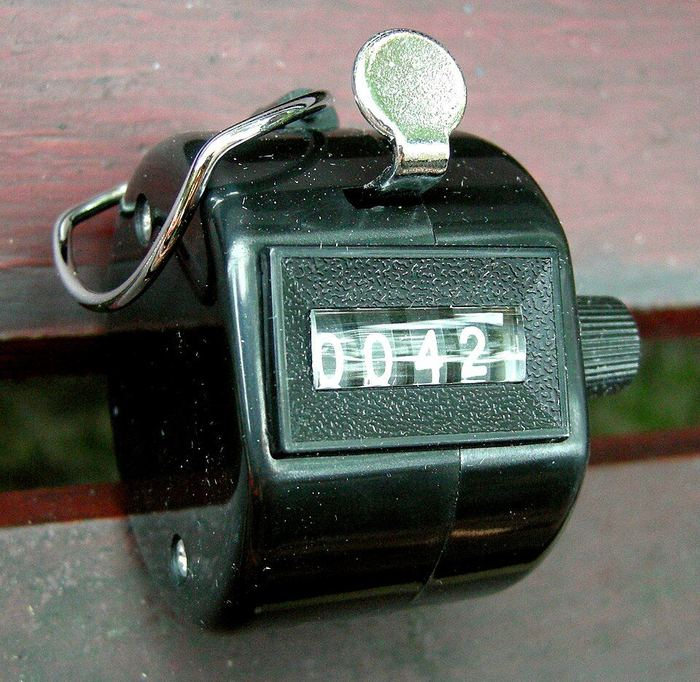
++. The doorman decides when to stop — that decision
is the loop’s condition, and it is the part a counter cannot do for itself.
Photo: Storye book, 2010 · CC BY 3.0Compared with the fixed version, only the condition changed —
i <= 10 became i <= n. The impossible program became trivial.
…the condition never becomes false, and the loop never ends. There is
no way to stop a running program on this page — you will have to
reload. Delete the i++ above and see, once, deliberately.
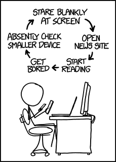
Read that as a loop and look for the exit condition. There isn’t one. Every loop you write, ask the same question: what makes this stop?
5.3The for loop
A for loop gathers those same three parts into one line, in order:
for (<initialisation>; <condition>; <modification>) {
<code>
}Read for (int i = 1; i <= n; i++) as “for i from 1 to
n in steps of 1”. Change the details and you change the pattern —
i += 2 from 2 gives the even numbers, from 1 gives the odd ones.
5.4while vs for: which is best?
Neither. They are functionally equivalent — every while
converts to a for and back. Java allows empty statements, so a while
becomes for (; i <= 10; ), and an infinite while (true) becomes
for (;;). Going the other way, you just unpack the three parts.
Since the machine cannot tell them apart, the choice is about what you tell the reader:
| Use | When | Because |
|---|---|---|
| for | the number of iterations is driven by an index | the syntax forces you to state all three parts, and a reader takes in the whole pattern at a glance |
| while | you do not know how many steps it will take | user input, or a condition that is not naturally an index — there is no index to put in a for header |
5.5For-each: walking a collection
for (<type> <name> : <iterable collection>) {
<code>
}Read it as “for each element in the collection…”. It hands you the elements one at a time and you never touch an index, so you cannot get the index wrong.
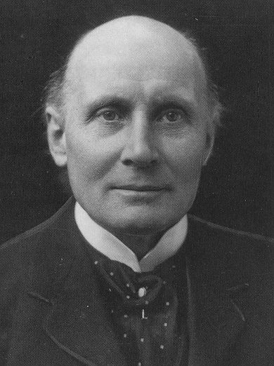
Civilization advances by extending the number of important operations which we can perform without thinking about them.
Alfred North Whitehead, An Introduction to Mathematics, 1911 Portrait: unknown, 1923 · public domainWhat counts as an “iterable collection”? Arrays, and anything that
implements Iterable — which is most things in the Java library with
a linear order. Notably not a String:
The error message tells you the rule exactly: can only iterate over an
array or an instance of java.lang.Iterable. Changing char to
String does not help — the problem is what you are walking, not what you pull
out of it.
A for-each is just syntactic sugar. For an array the compiler writes out the ordinary loop for you:
for (int index = 0; index < a.length; index++) {
int i = a[index];
System.out.println(i);
}5.6do-while: test afterwards
Both loops so far check the condition before the first pass. Sometimes you need to run the body first — most often because you need the input before you can judge it.
do {
<code>
}
while (<condition>); // note the semicolonWritten with a plain while, the prompt-and-read has to appear
twice: once before the loop and once inside it. Once you are writing the same
code in two places, look for a better way — here, this:
Let the machine do the dirty work.
Brian W. Kernighan & P. J. Plauger, The Elements of Programming Style, 2nd ed., 1978 Portrait: Ben Lowe, 2012 · CC BY 2.0The input box above holds three lines — 3, 5, then 6 — because
the program will ask three times. A do-while body always runs
at least once.
06Nesting, breaking, continuing
6.1Loops inside loops
Once you are inside a block you can write any statement, including another loop. Nesting is how you handle multi-dimensional data and anything of the form “for every x, for every y…”.
Note the inner loop’s stopping condition: j < i uses
the outer loop’s variable. That is common and useful — the inner loop does a
different amount of work each time around.
6.2Two dimensions
The same shape walks a two-dimensional array. Rows need not be the same length, so the
inner condition is data[i].length, not one fixed number:
Three dimensions is one more level of nesting, and so on. Matrix multiplication is the
classic triple nest — and note there that the names i and j can
be reused in a later set of loops, because a variable declared in a for header is
local to that loop.
…there is a recurring group of one or more cycles; that is, a cycle of a cycle, or a cycle of cycles.
Ada Lovelace, Note E, 1843 — nested loops, named 115 years before Java Portrait: Antoine Claudet, 1843 · public domain6.3Loops with almost no body
Only the middle part of a for header is restricted — it has to evaluate to
a boolean. The other two can be almost any expression, so a loop can have an empty
body and still do work:
Cramming everything into the smallest space is not a programming strategy — outside the Obfuscated C Code Contest, where it is the entire point. Code is read far more often than it is written, including by you, next month.
Write clearly — don’t be too clever.
Brian W. Kernighan & P. J. Plauger, The Elements of Programming Style, 2nd ed., 1978 — the book’s first rule Portrait: Ben Lowe, 2012 · CC BY 2.0The genuinely useful version of this is remembering that a loop body can be a single statement with no braces at all. Combined with a for-each, that reads beautifully:
6.4Finishing early with break
You met break in a switch. In a loop it ends the loop and the
program carries on from the next statement after it. In nested loops, the question is
which loop — run this and see:
Only the current loop. What break really does is jump to the
end of the current block — usually the next }. The outer loop keeps going and
starts a fresh inner loop each time.
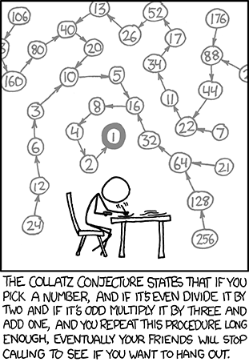
To leave both at once, label the outer loop and break to the label:
You can only break out to a block that encloses you, so control always
moves outward and forward — never into some unrelated block elsewhere. That restriction
is what keeps it from being the spaghetti machine an unrestricted goto is. More
on that in M3.
6.5continue: skip just this one
The inverse of break. It abandons the rest of this iteration and goes back to
the start of the loop.
It reads best as a filter: “this one is no good, next please”.
With a labelled continue, the prime finder from 6.1 loses both the
isPrime variable and the trailing if:
Same answers as 6.1, less bookkeeping. Compare the two and decide for yourself which one you would rather read in six months.
07Loops in Python
7.1The shape of a Python loop
Python has while and for, but its for is always a
for-each — there is no three-part header. To count, you iterate over
range(n), which gives 0, 1, …, n−1:
The Ed lesson bundle for these two weeks contains Loops in Python 2 — the control keywords below. The basics above are here so that the examples make sense; the Python loop reading proper sits with the rest of the Python material on Ed.
7.2break and continue
Both work in both kinds of loop, and mean exactly what they meant in Java:
break stops the loop immediately and resumes after it; continue skips
the rest of this iteration and goes back to the start.
Python has no labelled break. To leave nested loops you
restructure — commonly with a flag variable, or by moving the inner loop into a function
once you have those.
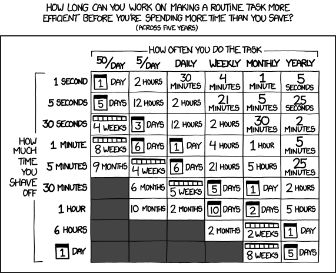
Automating repetition is the whole point of a loop — but the chart is honest about the other half: sometimes the loop costs more than the tedium it removes.
7.3Loop-else — the genuinely strange one
Python lets you attach an else clause to a loop. It runs when the loop ends
because its condition failed — and a break skips it.
The keyword is confusing — this else has nothing to do with the
else of an if. Mentally rename it “if the loop was never
broken out of”, and its one good use appears: a search loop that breaks on
a hit, with the “not found” message in the else.
08Arrays in Java
8.1Fifty variables is not a plan
Averaging two marks needs two variables. Three needs three. Fifty needs fifty — and then someone has to check that all fifty names appear correctly in the sum.
Worse is the flexible version. Handling “2 or 3 marks” with an if
already looks fragile, and it breaks the moment the user enters 0, 1, or 4. Two problems, one
answer:
- You do not want to invent a new variable name for every value.
- You want one piece of code that copes with every reasonable case.
That is exactly what an array is for.
8.2What an array actually is
A block of contiguous memory, cut into equal-sized elements. Each element holds one value of the array’s declared type, so once you know where the array starts, reaching element i is just an offset from that address — which is essentially what the number in the square brackets does.
- The number of elements is the length.
- The first element has index 0, the second 1, and the last is at length − 1. This is 0-indexing, and it is normal across most languages — see M2 for why.
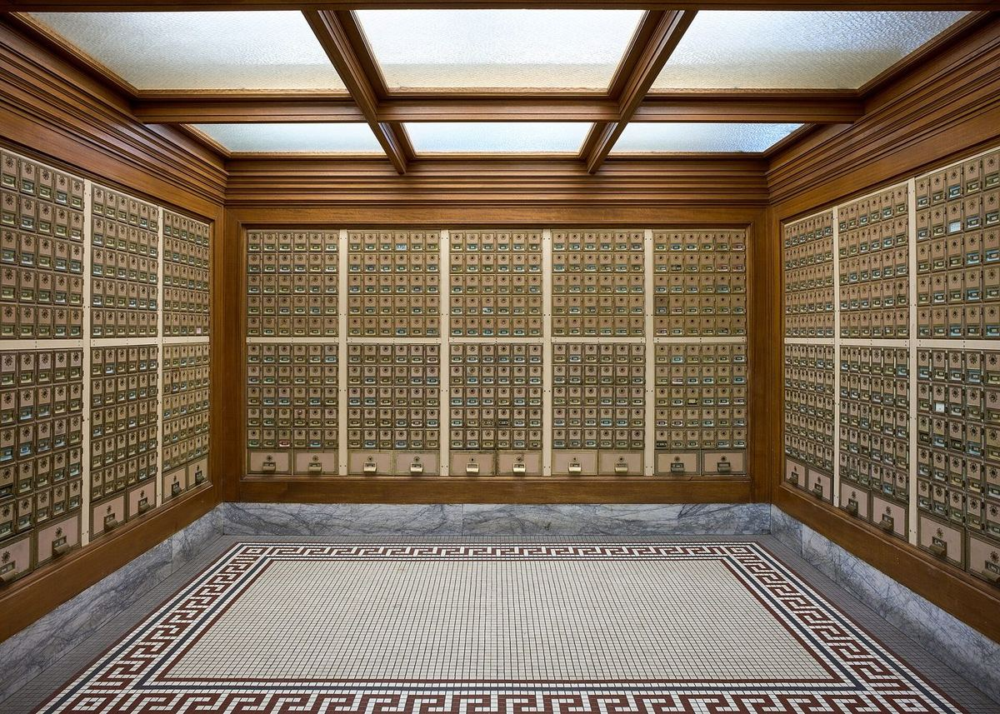
values[847] as fast as values[0]: the address is arithmetic, not a search.
Photo: Frank Schulenburg, 2024 · CC BY-SA 4.0Line by interesting line:
I found this amazing: only about 10 percent of professional programmers were able to get this small program right.
Jon Bentley, Programming Pearls: Writing Correct Programs, CACM 26(12), 1983 — on binary search Portrait: Wikimedia Commons, 2013 · CC BY-SA 4.0Bentley gave professional programmers an hour to write binary search over an array. Ninety percent shipped a bug — almost all of them at the boundaries. When your loop bound looks obviously right, that is exactly the feeling those programmers had.
It was not only the students. In 2006 Joshua Bloch, who wrote much of the Java library you are about to use, found the same class of bug in java.util.Arrays.binarySearch — (low + high) / 2 overflows once the array is big enough. It had been shipping in the JDK, he wrote, “after lying in wait for nine years or so”. The published version in Bentley’s own Programming Pearls had it too. Source: Joshua Bloch, Google Research blog, 2 June 2006.
| Code | What it is |
|---|---|
| int[] values | a variable of type “array of int”; the underlying type is int |
| new int[3] | arrays are objects in Java, so they are created with new |
| values[0] | the element (or cell) at position 0 — same syntax to read and to write |
| values.length | a field every array carries, giving its number of elements. No brackets — it is not a method |
The size does not have to be known at compile time. new int[n]
with n read from the user is perfectly legal, because Java objects are allocated
at run time. If you have never seen C, this will seem too obvious to mention.
8.3Arrays plus loops
Section 8.1 wanted one program for any number of marks. With an array and a loop you finally have it — and the loop bound comes from the array itself:
The underlying type need not be primitive either —
String[] words = new String[2]; works exactly the same way.
8.4More than one dimension
Nothing new: just add more brackets. new int[2][2] gives a 2×2 grid.
The interesting part is that int[][] is an array of arrays, not
a special two-dimensional object. Append [] to a type to mean “array of
that”, and int[][] reads as “array of int[]”. Two
consequences:
values[i]hands you back a wholeint[], which is whydata[i].lengthin section 6.2 made sense.- The rows do not have to be the same length.
new int[3][]creates the outer array and lets you size each row yourself — a ragged array that uses only the space it needs.
8.5Fixed size, and what a variable really holds
A Java array is not resizable. You can point the variable at a new, bigger array, but the data does not come with it unless you copy it.
And pointing the variable somewhere else does not destroy the old array — the variable simply stops referring to it. If something else still refers to it, it is still there, unchanged:
After the reassignment b[1] is still 4, but a[1]
is 0. This is your first real encounter with references, and it will come back
repeatedly from Week 6 onwards.
8.6Tidbits worth knowing
| Thing | Detail |
|---|---|
| Array literal | int[] a = {1, 4, 7, 8, 2}; when you already know the contents |
| One type only | {1, "Hi", 3.4} is not allowed — see section 11 |
| C-style syntax | int a[] = new int[3]; also compiles, a concession to arriving C programmers |
| Auto-initialised | every cell gets a default: 0 for numbers, false for booleans, null for any object type |
| Maximum size | indices are ints, so the ceiling is Integer.MAX_VALUE; in practice you run out of contiguous memory long before that. A long index is rejected outright |
8.7The two array errors you will actually meet
The common one is going out of bounds. Notice when it is caught:
The first line prints, then it throws. This is a run-time error, not a compile error — even though a human can see that 23 is too big, the compiler cannot decide this in general, so it does not try.
< or <=, 0 or 1 — and you get the same off-by-one, which is why it is the error every array bug is made of.
Photo: Trish Steel, 2008 · CC BY-SA 2.0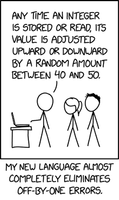
…every occurrence of every subscript of every subscripted variable was on every occasion checked at run time against both the upper and the lower declared bounds of the array.
C. A. R. Hoare, The Emperor’s Old Clothes, 1980 ACM Turing Award Lecture Portrait: Rama, 2011 · CC BY-SA 2.0 frThat is Hoare describing his own Algol compiler in the 1960s. When customers were later offered the option to switch those checks off for speed, they unanimously told him not to — they already knew how often subscript errors happen, and how badly they end. He then adds:
I note with fear and horror that even in 1980, language designers and users have not learned this lesson.
C. A. R. Hoare, same lecture Portrait: Rama, 2011 · CC BY-SA 2.0 frSo the exception you just saw is not Java being fussy. It is a Turing Award winner’s hard-won argument, finally built into the language.
The other one is caught at compile time: using an array you never initialised.
Two errors, two moments. Knowing which kind you are looking at tells you where to go looking — a compile error is in the text of your program, a run-time error is in what it was given.
09Lists in Python
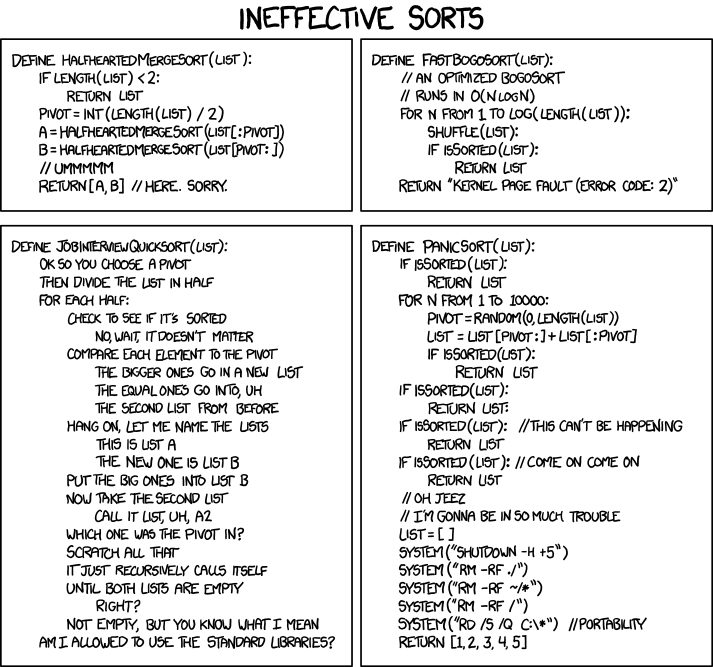
9.1No arrays here
Python, unlike almost every other imperative language, has no array type as a basic type. Libraries add them — NumPy most famously — but vanilla Python uses the list as its “collect a bunch of data together” type.
Lists are indexed like Java arrays, from 0. Two differences, both from Python’s dynamic type system:
- They have no fixed size.
- Their elements may have different types.
Lists are objects, but they offer no length field or method of their own. Python uses the
generic len function, which works on anything that properly reports a length
— there is some syntactic misdirection going on, and you will meet it again with strings,
dicts and sets.
9.2Changing the length
append(elem) adds to the end. insert(pos, elem) puts one at
pos, moving what was there — and everything after it — up one place.
9.3Joining lists together
+ builds a new list, += and extend add to the end of
an existing one:
9.4Slice assignment
A whole list can be dropped into the middle of another with a slice:
l[a:b] = m replaces everything the slice covers with the contents of
m. Both indices mean “just before that position”.
Which gives a neat trick: a slice of zero width, like l[1:1],
covers nothing, so nothing is removed and m is simply squeezed in at that point.
10Dictionaries, sets and tuples
10.1Why Python has three more of these
Java keeps its primitive types to the smallest set it could get away with, and does everything else through classes and objects. Python has a different goal: a wide range of tools with lightweight syntax, at some cost in uniformity.
So Python ships three more data structures with syntax of their own. Java has two of the three — not by default, more work to use, and more structured in return. There is no Java tuple at all.
| Type | Is | Written |
|---|---|---|
| dict | like a list, but reached by a key instead of a number | {'a' : 1, 'b' : 2} |
| set | an unordered collection with no duplicates | {1, 2, 3} |
| tuple | a list you cannot change once made | (1, 'a', 5.4) |
Internally these are classes, like everything else. Python just gives you special syntax so you never have to see that part.
Data dominates. If you’ve chosen the right data structures and organized things well, the algorithms will almost always be self-evident.
Rob Pike, Notes on Programming in C, Rule 5, 1989 Portrait: Kevin Shockey, 2010 · CC BY 2.0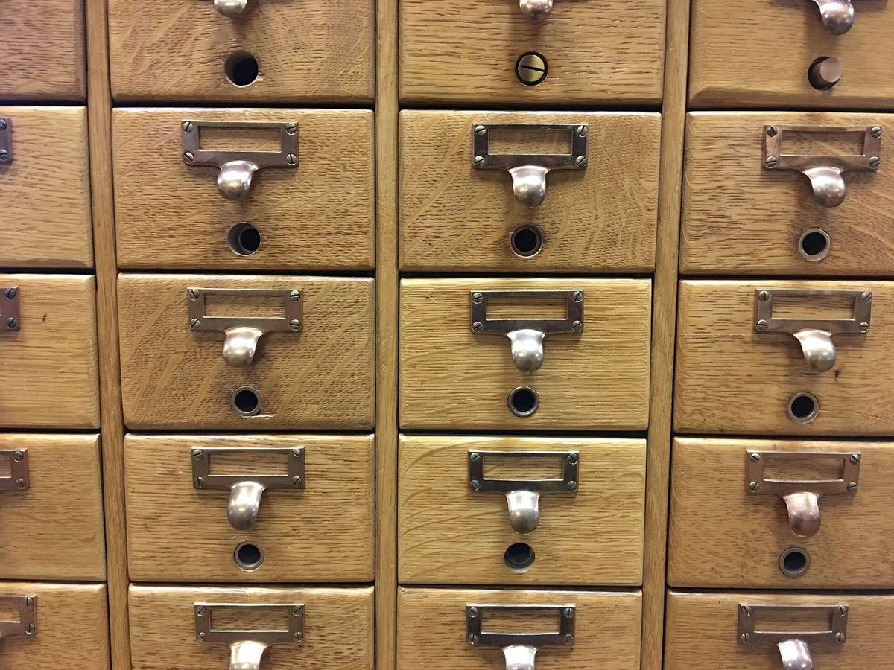
10.2Dictionaries
A dict (hash-map, associative array, hash-table — same idea, many names) stores key–value pairs. You get at a value with square brackets and its key, exactly as you would with a list index.
Iterating takes a moment’s thought, because every entry has two halves. Plain
for k in d: gives you the keys:
That the loop comes out in the order you inserted the keys is a recent promise. Until Python 3.6 a dict had no defined order at all, and the same program could print its keys differently on another machine. Python 3.6 happened to preserve insertion order as an implementation detail; Python 3.7 made it “an official part of the Python language spec”. Code written before 2018 that relies on it was simply lucky. Source: What’s New In Python 3.7.
The main dict error. Ask for a key that is not there — usually a typo — and you
get a KeyError naming the key you asked for. Try changing
luke_data['name'] above to luke_data['nme'].
10.3Sets
The mathematical idea, built in: a collection with no duplicates and no guaranteed order. Add the same element five times and one survives.
You cannot pull an element out by position — if you could, it would be a list, and Python already has one of those. What you can do is ask whether something is in it, and combine sets with the usual operations:
| Operator | On sets, means |
|---|---|
| <= < | subset · proper subset |
| >= > | superset · proper superset |
| | & | union · intersection |
| - ^ | difference · symmetric difference |
To change one, use add and remove — there is no index to
assign to. And the negation of in is not in, not not x in.
Sets and dicts share { }, and the empty case had to belong to one of them. It
went to dict. So {} is an empty dict, and an empty
set has to be written set().
10.4Tuples
A tuple is a list you cannot change. Index it, iterate it, read it — but you cannot assign to an element, add one or remove one. That sounds like a limitation until you notice how often you never needed to change the data anyway, which makes tuples the natural way to bundle a few values together.
It is the comma that makes a tuple, not the parentheses — the brackets just look nicer. Which leads to one genuinely odd edge case:
Everything else works the way you would now expect:
primes[0] for an element, for p in primes: to walk it. This is the
same tuple d.items() handed you in 10.2.
11Bundling data together
11.1Easy in Python
Each person has a name (a str) and a favourite number (an int).
Python’s dynamic types make a list of pairs trivial:
11.2…and stuck in Java
Try the same thing in Java and you cannot even write the declaration:
???[] people = ???[]; // what type goes here? people[i] = name? num? // and how do both go in one cell?
- A Java array has one element type, so it cannot hold Strings and
ints together. - Java has no tuple.
- Java does have
List, but it has the same type restriction.
11.3The answer with nothing new: parallel arrays
Keep the halves in separate arrays, kept in step by index. All the types
match, so Java is happy — and names[i] goes with numbers[i]
because you make sure it does.
Nothing in the language ties names[3] to numbers[3]. Sort one
array and forget the other, insert into one and not the other, and the data is silently
wrong — no error, no crash. It works, but the correctness lives in your head rather than
in the code.
Bad programmers worry about the code. Good programmers worry about data structures and their relationships.
Linus Torvalds, git mailing list, 27 July 2006 Portrait: Krd (photo) Von Sprat (crop/extraction), 2014 · CC BY-SA 4.011.4What C and C++ do: struct
Java’s culture comes from C and C++, where this problem has a name. A
struct is literally a way to bundle data of different types — often called
“plain old data”:
struct data {
std::string name;
int num;
};With that, one collection holds the pairs, and the rest of the program looks much like the Java above — just without the second array.

11.5The Java version: a class that only carries data
class Data {
public String name;
public int num;
}Structurally close to the struct, with four differences worth naming:
- The keyword is
class. - Each data member is marked
public. - You create one with
new, exactly as withScanner. - You reach a member with the dot operator:
d.name.
Two things will look unfamiliar. It is not marked public,
which is what lets it share a file with another class. And it has no methods at
all — no main, nothing.
Java is object-oriented first and foremost, and this is the first step towards that — but you do not yet have the tools to do it properly, so public fields and no methods is the quick-and-ugly version. It is here because it solves today’s problem with today’s knowledge. The classes module replaces it, and you should expect to be told off for writing this once you know better.
12Coding exercises
Eight exercises, marked automatically against test cases — the same idea as the Ed labs, but nothing here is recorded or submitted. Write your answer, press Run tests, and read what comes back. A worked solution sits under each one, but try it first: reading a solution teaches you far less than failing a test does.
A capital letter or a missing full stop fails the test, exactly as it would on Ed. Trailing spaces and the final newline are the only things forgiven — which is why the times table in exercise 5 can end each line with a space.
A failing test shows the input, what was expected and what your program actually printed. If the program did not compile or crashed, you get the real compiler output or stack trace instead — Week 1’s skill, now doing real work.
13Team activity
Three or four people, fifteen minutes, then two minutes to report back. These run in the lecture and in the lab — class activities like these count towards the participation side of your mark.
Write the conditions, and find the gap
On paper, write the rules a ticket machine uses to price a fare: child under 6 free, child 6–15 half price, student with a card half price, senior over 60 free on weekends, everyone else full price.
- Turn them into one
if/else ifladder. What order did you put them in, and why? - Find an input that falls through every branch. Find one that matches two branches — which one wins?
- A 15-year-old student with a card on a Sunday. What does your ladder charge them? Is that what you intended?
Report back: the case your first draft got wrong.
Break the loop on purpose
Open section 5.2’s “Print 1 to n” console. Take turns making one change each and predicting the result before running it:
- delete the
i++ - change
i <= ntoi < n - start
iat 0 instead of 1 - move the
i++above theprintln
Report back: three of those four change the output by exactly one number. Which one is a different kind of mistake altogether, and why is it worse?
Guess before you run
Each person picks one console from this page without running it, reads it
aloud, and states what it will print. Then run it. Good candidates: the fall-through switch
in 3.2, the two-if bug in 2.2, the aliasing demo in 8.5, and the loop-else in
7.3.
- Who was wrong, and what exactly did they assume?
- Was the mistake about syntax or about what the machine does?
Report back: the one that surprised the most people in your group.
Parallel arrays, and the bug nobody sees
Section 11.3 keeps names and numbers in step by index. Nothing
in the language enforces that.
- Write down three ways a later change to that program could break the pairing.
- What would the program do when it breaks — crash, or quietly print the wrong person’s number?
- Which of those two is worse, and why is that the whole argument for 11.5?
Report back: your worst realistic scenario, in one sentence.
Four times this session you will be asked to explain code in person. Groups that talk through code every week find that conversation ordinary; groups that never do find it hard. That is the whole reason these activities exist.
14Quiz
Twenty-six questions across both weeks. Answer them all, then grade. Every question explains its answer, including why the wrong options are wrong. Nothing is recorded or submitted.
Work it out in your head first. If you are unsure, the honest move is to paste the snippet into the Playground afterwards — but guess before you run, or you learn nothing about what you actually believed.
15Further reading
None of this is assessed. It is here for the moment a section leaves you curious, and for the claims above that you should check rather than take our word for.
The official word
Control flow statements
Oracle's own walkthrough of if-then-else, switch, while, do-while, for and the branching statements. The reference version of everything in sections 2 to 7.
docs.oracle.com Tutorial · section 8Arrays
Declaring, creating, indexing and copying arrays, including the multi-dimensional case and the array-of-arrays point that makes ragged arrays possible.
docs.oracle.com Tutorial · sections 9, 10Python data structures
The detailed version of lists, dicts, sets and tuples — every method, plus list comprehensions, which you will want the moment this stops feeling new.
docs.python.org Tutorial · sections 4, 7Python control flow, including match
if, for, range, break, continue and the loop-else — plus the match statement, which does considerably more than the switch-like use shown here.
docs.python.org Tutorial · section 4.3PEP 636 — Structural Pattern Matching
The official tutorial for match, written by the people who added it. Start here to see why it is pattern matching rather than a switch with a new coat of paint.
peps.python.orgBehind the claims on this page
Why numbering should start at zero
Dijkstra's one-page argument from 1982 that 0 ≤ i < N is the least awkward of the four ways to write a range. Short, and oddly persuasive.
Go To Statement Considered Harmful
Two pages from 1968 that started an argument still running today — and the reason Java's labelled break comes on a leash. The title was the editor's, not Dijkstra's.
homepages.cwi.nl Contest · section 6.3The International Obfuscated C Code Contest
Where cramming everything into one expression is the point rather than the problem. Running since 1984. Look at a winner, then never write code like it.
ioccc.org History · M2Duff's device
Tom Duff, 1983: a loop unrolled by interleaving a switch with a do-while. The trick behind the switch-with-no-breaks in the Ed arrays reading.
wikipedia.org Quotation · section 5Perlis — Epigrams on Programming
The source of the epigraph at the top of section 5. A hundred and change one-liners from 1982, of which a great many are still exactly right.
wikiquote.orgM1Every operator, both languages
Reference, not reading. You do not need to memorise any of this — you need to know
it exists, so that when you meet ^ or // or >>>
in someone else’s code you know where to look.
Java
| Group | Operators | Notes |
|---|---|---|
| Assignment | = | right to left |
| Arithmetic | + - * / % | the result takes the type that loses no information — int plus short gives an int |
| String | + | concatenates, as long as the other operand is primitive or has a toString |
| Unary | + - ++ -- | prefix ++ returns the value after adding; postfix returns the value before |
| Equality | == != | for object variables this asks “the same object?”, not “the same value?” |
| Relational | < > <= >= | numeric primitives only |
| Logical | & | && || ! | && and || short-circuit; & and | always evaluate both sides |
| Ternary | ? : | A ? B : C — shorthand for a small if-else that produces a value |
| Bitwise | ~ & | ^ << >> >>> | >> keeps the sign bit, >>> does not |
| Compound | += -= *= /= %= &= |= ^= <<= >>= | A op= B means A = A op B |
| Access | [] . () (type) instanceof :: | yes, the square brackets are an operator |
Precedence, highest first. Everything on one line ties, and ties are broken by the associativity given:
| # | Operators | Associativity |
|---|---|---|
| 1 | () [] . | left to right |
| 2 | postfix ++ -- | right to left |
| 3 | prefix ++ -- ! ~ unary + - (type) | right to left |
| 4 | * / % | right to left |
| 5 | + - | left to right |
| 6 | >> << >>> | left to right |
| 7 | < <= > >= | left to right |
| 8 | == != | left to right |
| 9–13 | & · ^ · | · && · || | left to right, in that order |
| 14 | ?: | right to left |
| 15 | = += -= *= /= %= and friends | right to left |
Python
| Group | Operators | Notes |
|---|---|---|
| Arithmetic | + - * / % ** // | / is always floating point; // is floor division and ** is exponentiation |
| Comparison | == != < <= > >= | produce True or False |
| Assignment | = += -= *= /= **= //= %= | as in Java |
| Logical | and · or · not · is · is not · in · not in | English words, not symbols — which also rules them out as variable names |
| Bitwise | & | ^ ~ << >> | different from the logical operators; you will not need these for a while |
| Grouping | () | allowed, but used sparingly by convention — if 1 < 2: over if (1 < 2): |
| Conversion | int() float() complex() bool() str() | not operators, but you will use them constantly |
Python’s / always gives a float, so 9 / 3 is
3.0. Java’s / on two ints gives an
int, so 9 / 3 is 3 and 7 / 2 is
3. Same symbol, different answer — the Week 1 trap, and the reason
exercise 4 insists on a double.
Python precedence, highest first:
() ·
** ·
~ ·
* / // % ·
+ - ·
<< >> ·
& ·
^ ·
| ·
comparisons, is, in ·
not ·
and ·
or.
M2Why arrays start at zero
M2.1Not an accident, and not only about memory
The usual explanation is that index i is an offset from the start of the array, so the first element sits at offset 0. True, and it is where the convention came from. But there is a better argument, and it is about ranges.
In 1982 Edsger Dijkstra wrote a one-page note, EWD 831, asking how to write “the numbers 1 through 10”. There are four options:
| Form | Trouble |
|---|---|
| 1 ≤ i < 11 | the upper bound is not itself a number in the sequence |
| 0 < i ≤ 10 | the lower bound is not itself a number in the sequence |
| 1 ≤ i ≤ 10 | an empty range needs an upper bound below the natural numbers |
| 0 < i < 11 | both problems at once |
The first form wins on two counts: the length is simply upper minus lower,
and an empty range is the harmless a ≤ i < a. Adopt it, then start indices at
the smallest natural number, and you get 0 ≤ i < N — which is exactly
the shape of every for loop you have written today.
for (int i = 0; i < a.length; i++). No + 1, no
- 1, and the number of iterations is visibly a.length. Try writing
the same loop 1-indexed and count how many places you have to get right.
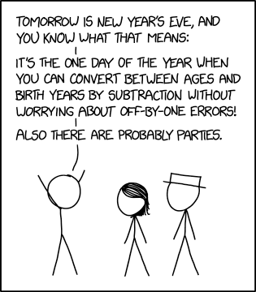
M2.2Duff’s device, and switches with no breaks
The Ed arrays reading uses a switch with no breaks to pick where to
start reading values — deliberately falling all the way down. That looks like a
party trick. It is actually a technique with a name and a date.
In 1983 Tom Duff, then at Lucasfilm, needed to copy data faster than a straightforward loop
allowed. The answer was loop unrolling: do eight copies per iteration instead
of one, so the loop’s own overhead is paid one-eighth as often. The awkward part is the
leftovers — what if the count is not a multiple of eight? Duff’s answer was to
interleave a switch through a do-while, jumping into the
middle of the unrolled body so the remainder is handled first.
It is legal C, it is genuinely clever, and Duff himself expected it to start an argument. Today compilers unroll loops for you, so it is history rather than advice — but it is why fall-through exists at all, and it is worth knowing that the ugly thing in the reading is a fossil of real engineering.
“Old, slow computers with bad compilers” is the context that made this worth doing. None of those three conditions holds for you. Write the clear loop.
M3goto, and why break has a leash

M3.1The letter that started it
In March 1968 the Communications of the ACM published a two-page letter by Edsger
Dijkstra arguing that the goto statement — jump anywhere, from anywhere —
should be abolished from high-level languages. His argument was not that it was inelegant. It
was that with unrestricted jumps you cannot describe where a running program has got
to, so you cannot reason about it — and neither can the person reading it.
The quality of programmers is a decreasing function of the density of go to statements in the programs they produce.
E. W. Dijkstra, CACM 11(3), March 1968 Portrait: Hamilton Richards, 2002 · CC BY-SA 3.0The famous title, Go To Statement Considered Harmful, was not Dijkstra’s — the editor, Niklaus Wirth, supplied it. It went on to spawn a whole genre of “considered harmful” papers, including several arguing the opposite.
M3.2What replaced it, and what survives
What won was structured programming: build programs out of blocks with one
way in and one way out — sequence, selection, repetition. That is precisely the
if, the switch and the loops in sections 2 to 7. Everything you
learned this week is the settlement of that argument.
Java took it literally. goto is a reserved word in Java that does
nothing — you cannot use it as a variable name, and you cannot use it to jump
either. What Java offers instead is the labelled break and continue
from section 6.4, with one rule that makes all the difference:
You may only break to a block that encloses the break. Control therefore
moves outward and forward, never sideways into unrelated code. The block structure still
tells you where you can possibly end up — which is exactly the property Dijkstra said
goto destroys.
So the labelled break is not a loophole. It is the largest amount of jumping that can be allowed while keeping the thing that made structured programming worth having.
The price of reliability is the pursuit of the utmost simplicity.
C. A. R. Hoare, The Emperor’s Old Clothes, 1980 ACM Turing Award Lecture Portrait: Rama, 2011 · CC BY-SA 2.0 frWhat to actually do
On Ed, work through the eleven Week 2 and 3 lessons. They interleave the two languages deliberately — this order matches the sections above:
- Booleans and Conditional Statements — Or — How to Choose in Java
- Conditional Statements in Python
- Loops in Java 1 — while, for, for-each, do-while
- Loops in Java 2 — nesting, break, continue
- Loops in Python 2 — break, continue, loop-else
- Arrays in Java
- Lists in Python
- Dictionaries, Sets and Tuples in Python
- Bundling Data Together in Java — your first taste of a class
- Java Trivia, Tidbits and Tables — reference, skim it
- A Python Miscellany — reference, skim it
They are operator tables. Skim them once so you know what is in them, then come back when you meet a symbol you do not recognise. Both are reproduced in M1 on this page, side by side.
Assessed lab exercises are due 11:55pm the Monday of the following week, with unlimited attempts — but you must pass all test cases in an exercise to get its marks. Canvas → Assignments is authoritative for what is due and when; where this page differs, Canvas and the announcements win.
Predict the output of every runnable block on this page before you press Run. Being wrong and finding out immediately is the fastest form of learning available to you, and it is free.
Coming up in Week 4: arrays and user input in earnest — plus the first code comprehension check.
Everything cited on this page
The lecture content comes from the Week 2 and 3 lessons on Ed. The links below are for the claims this page adds around them — checking a source yourself is a better habit than trusting any lecture slide, including ours.
Documentation
| Used in | Source |
|---|---|
| 2–7 | Oracle — Control Flow Statements, The Java Tutorials |
| 8 | Oracle — Arrays, The Java Tutorials |
| 4.3 | PEP 636 — Structural Pattern Matching: Tutorial |
| 7, 9, 10 | Python — Data Structures and More Control Flow Tools |
| M1 | Oracle — Operators, and Python — Operator precedence |
Quotations
Every quotation on this page was checked against a primary source — the original paper, book or message, not a quotation website.
| Used in | Source |
|---|---|
| 2.2, 6.3 | Brian W. Kernighan & P. J. Plauger, The Elements of Programming Style, 2nd ed., McGraw-Hill, 1978 — “Take care to branch the right way on equality” (ch. 6), “Write clearly — don’t be too clever” (the book’s first rule), “Let the machine do the dirty work” |
| 5.1, 6.1 | Ada Lovelace, Note E of the Translator’s Notes to L. F. Menabrea, Sketch of the Analytical Engine, Scientific Memoirs vol. III, 1843, p. 716 |
| 5.5 | Alfred North Whitehead, An Introduction to Mathematics, 1911, ch. V |
| 8.2, 8.7, M3.2 | C. A. R. Hoare, The Emperor’s Old Clothes, 1980 ACM Turing Award Lecture, Communications of the ACM 24(2), February 1981, pp. 75–83 |
| 8.2 | Jon Bentley, Programming Pearls: Writing Correct Programs, Communications of the ACM 26(12), December 1983, pp. 1040–1045 |
| 10.1 | Rob Pike, Notes on Programming in C, Rule 5, 21 February 1989 |
| 11.3 | Linus Torvalds, message to the git mailing list, 27 July 2006 |
Comics
All by Randall Munroe, xkcd.com, used under CC BY-NC 2.5: 292, 676, 710, 1033, 1185, 1195, 1205, 1411, 1537, 1652, 2200, 2248, 3062.
Photographs
From Wikimedia Commons, reused under the licence each one names. Author and licence come from the Commons API rather than from anyone’s memory — see media/fetch-photo.py.
| Image | Source |
|---|---|
| ascii-chart | USASCII code chart — An unknown officer or employee of the United States Government, 1967 · public domain |
| corrado-bohm | CorradoBoemETAPS2013 2013-03-22 0.33.36 — Carbonem, 2013 · CC BY-SA 4.0 |
| joshua-bloch | Joshua Bloch at JavaOne 2005 (cropped) — Billy Bob Bain, 2005 · CC BY 2.0 |
| athletics-lanes | Athletics track start line numbers 1, 2, 3 — Santeri Viinamäki, 2016 · CC BY-SA 4.0 |
| card-catalog | Wooden Card Catalog Furniture — MarkBuckawicki, 2018 · CC0 |
| conveyor | Conveyor system in a factory — falco, 2015 · CC0 |
| fence-posts | Post and rail fence, Bishopstone - geograph.org.uk - 1009517 — Trish Steel, 2008 · CC BY-SA 2.0 |
| george-boole | George Boole color — Unknown author, 1864 · public domain |
| po-boxes | PO boxes at the historic Chico Post Office (2024)-L1005460 — Frank Schulenburg, 2024 · CC BY-SA 4.0 |
| railway-turnout | Treskensväxel vid Jenny — Mikael Johansson, 2006 · CC BY-SA 3.0 |
| tally-counter | Hand tally and knitting row counter 007 — Storye book, 2010 · CC BY 3.0 |
| bentley | Jon Bentley informaticien — Wikimedia Commons, 2013 · CC BY-SA 4.0 |
| dijkstra | Edsger Wybe Dijkstra — Hamilton Richards, 2002 · CC BY-SA 3.0 |
| hoare | Sir Tony Hoare IMG 5125 — Rama, 2011 · CC BY-SA 2.0 fr |
| kernighan | Brian Kernighan in 2012 at Bell Labs 1(cropped) — Ben Lowe, 2012 · CC BY 2.0 |
| lovelace | Ada Lovelace daguerreotype by Antoine Claudet 1843 - cropped — Antoine Claudet, 1843 · public domain |
| pike | Rob-pike-oscon — Kevin Shockey, 2010 · CC BY 2.0 |
| torvalds | LinuxCon Europe Linus Torvalds 03 (cropped) — Krd (photo) Von Sprat (crop/extraction), 2014 · CC BY-SA 4.0 |
| whitehead | ANWhitehead — unknown, 1923 · public domain |
{kind=link}
{kind=link}
{kind=link}
{kind=link}
{kind=link}
{kind=link}
{kind=link}
{kind=link}
{kind=link}
{kind=link}
{kind=link}
{kind=link}
{kind=link}
{kind=link}
{kind=link}
{kind=link}
{kind=link}
{kind=link}
{kind=link}
Articles, papers and notes
| Used in | Source |
|---|---|
| 5 | Alan J. Perlis, Epigrams on Programming, ACM SIGPLAN Notices 17(9), September 1982 |
| 6.3 | The International Obfuscated C Code Contest, running since 1984 |
| 1.3 | Claude E. Shannon, A Symbolic Analysis of Relay and Switching Circuits, MIT master’s thesis, 1937 — and George Boole, An Investigation of the Laws of Thought, 1854 |
| 2.2 | Fortran — the three-way arithmetic IF, and the logical IF in FORTRAN IV (1962) |
| 3.1 | ASCII (history) — the 1963 decision to place the cases one bit apart |
| 5.1 | The structured program theorem — Corrado Böhm & Giuseppe Jacopini, 1966 |
| 8.2 | Joshua Bloch, Extra, Extra — Read All About It: Nearly All Binary Searches and Mergesorts are Broken, Google Research blog, 2 June 2006 |
| 10.2 | What’s New In Python 3.7 — dict insertion order becomes part of the language spec |
| M2.1 | E. W. Dijkstra, Why numbering should start at zero (EWD 831), 11 August 1982 |
| M2.2 | Duff’s device — Tom Duff, Lucasfilm, 1983 |
| M3.1 | E. W. Dijkstra, Go To Statement Considered Harmful, Communications of the ACM 11(3), March 1968, pp. 147–148 |